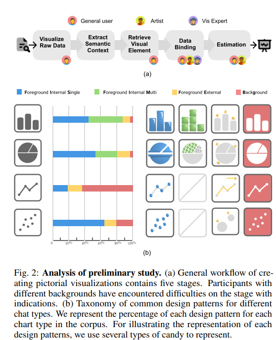
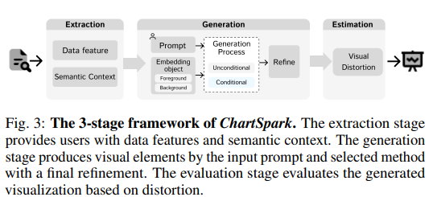
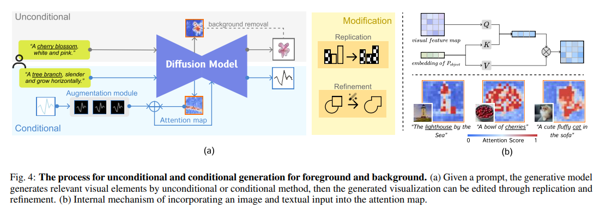
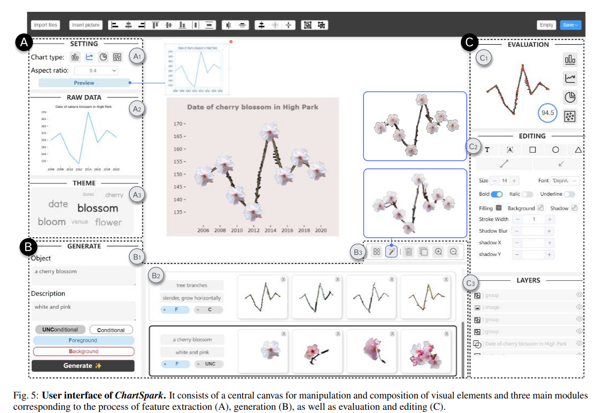
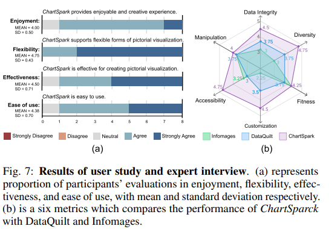

论文：Let the Chart Spark Embedding Semantic Context into Chart with Text-to-Image Generative Model
作者：Shishi Xiao, Suizi Huang, Yue Lin, Yilin Ye, Wei Zeng
发表：VIS 2023
这篇论文提出了一个名为ChartSpark的新系统，使用文本到图像的生成模型来创建富有语义上下文的图表。该系统解决了传统图像可视化工具在数据完整性和适用性方面的局限性。ChartSpark能够根据文本输入生成图像，并包括一个交互式界面，该界面集成了文本分析、编辑和评估模块。这使用户能够更灵活地生成和修改图像可视化。该工具的可用性通过实验得到了证明，展示了文本到图像生成模型与交互式界面结合使用在可视化设计方面的潜力。
背景介绍
在当今数据丰富的世界中，可视化技术对于有效展示复杂数据至关重要。图像化可视化尤为宝贵，提供了增强记忆回忆、用户参与度以及高效信息获取等好处。尽管其在各个领域得到了广泛应用，但创建有效的可视化需要设计专业知识，这对新手来说常常是个挑战。为此，已经开发了一些辅助用户的创作工具，通常分为基于规则的和基于示例的两大类。但这两种方法都有其局限性，如僵化或需要大量示例。
最近在可视化方面的进展聚焦于通过检索和编辑过程将数据与图形元素结合。然而，挑战依然存在，比如需要高质量的图像库和绑定数据与视觉元素对新手来说的难度。语言模型已被探索用于自动生成图表，但它们存在限制，如只能识别特定的数据类型。
我们介绍了ChartSpark，这是一个新的工具，它将文本到图像的生成模型整合用于创建图像化可视化。它从文本中提取可视化对象，并根据用户提供的描述指导生成。ChartSpark将对象分为前景和背景，并提供条件和非条件的生成方法。这种方法简化了可视化过程，相比传统方法在易用性、灵活性以及将语义信息与视觉数据自然结合方面具有优势。
本文的贡献有两点：
- 基于生成模型的图像化可视化创造
- 构建辅助用户创作的界面
- 案例研究和专家访谈证明了方法的有效性
相关工作
- Pictorial Visualization
- Text-guided Image Generation
前期调研
本文进行了一项初步研究，以了解制作图形表示的设计过程。从形成性访谈中，收到了总结为设计要求的担忧和期望。

设计目标 & 任务
预览数据和主题
个性化视觉元素
将语义上下文嵌入图表
效果评估
具体方法
ChartSpark 的 3 阶段框架。提取阶段为用户提供数据特征和语义上下文。生成阶段通过输入提示和选定的方法生成视觉元素，并进行最终优化。评估阶段根据失真评估生成的可视化效果。



实验
为了全面评估 ChartSpark 的功效，本文进行了三种不同的分析，包括示例应用、用户研究和专家访谈。
实验中，参与者首先了解基本概念，包括嵌入对象（前景和背景）和嵌入技术（条件和无条件）。
接下来，向参与者展示了界面并介绍了功能。
然后，作者指导参与者逐步完成创建图形可视化的过程。
最后，作者鼓励他们独立探索创作工具10分钟，以进一步熟悉。
之后，参与者被要求根据给定的数据文档进行图形可视化。
作者仔细观察了他们的创作过程，并记录了他们的询问和评论。
完成创建后，作者开始调查，参与者回答了四个关于可用性和有效性的 5 点李克特量表问题。
调查结束后进行了简短的采访，以收集更多反馈。每项研究持续约50分钟。参与者在完成研究后获得了 10 美元的礼物

总结
创新的框架设计：ChartSpark作为一种新颖的框架，其利用文本到图像的生成模型创造图像化可视化是一种创新。这种方法能够有效整合语义内容和图表信息，从而产生既丰富又精确的可视化输出。
灵活性与多功能性：ChartSpark的一个显著特点是其灵活性和多功能性。它能够适用于条件和非条件方法，融合语义上下文与图表，并且既适用于前景也适用于背景的可视化设计。这种灵活性使其成为一个适用于多种应用场景的工具。
用户友好的界面：该框架还包含一个集成了特征提取、生成和评估的用户界面，这使得创建过程更为便捷和直观。这表明作者不仅关注技术创新，还重视用户体验的优化。
实际应用和评估：通过展示覆盖图像化可视化四大主要形式的案例，作者有效地评估了ChartSpark的实用性。用户研究和专家访谈的反馈提供了实证支持，证明了这个框架的有效性。
开源共享：作者将模型和界面的源代码以及图像化可视化语料库发布在GitHub上，这体现了开放科学的精神，并为后续的研究工作提供了宝贵的资源。
✉️ zjuvis@cad.zju.edu.cn